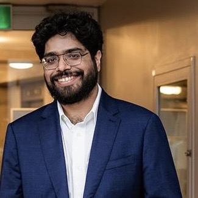

Sharan VaswaniAssistant Professor, Simon Fraser University

I am an Assistant Professor in the School of Computing Science at Simon Fraser University (SFU). My current research interests are in designing better algorithms for sequential decision-making under uncertainty. I am also interested in stochastic optimization and its interplay with generalization in modern machine learning. I am looking to recruit PhD students. Please read this before applying. In 2020-2021, I was a postdoc in Computer Science at the University of Alberta with Csaba Szepesvari, and worked on reinforcement learning with constraints and multiple objectives. In 2019-2020, I was a postdoc at Mila - Quebec Artificial Intelligence Institute with Simon Lacoste-Julien, and worked on stochastic optimization for over-parameterized models. From 2015-2018, I was a PhD student in Computer Science at the University of British Columbia (UBC), and was co-supervised by Laks Lakshmanan and Mark Schmidt. My PhD research was on "Structured Bandits and Applications", where we considered problems involving decision-making under uncertainty for applications in social networks and recommender systems. I completed my MSc in Computer Science from UBC in 2015. I was supervised by Laks Lakshmanan and worked on the online and adaptive variants of the influence maximization problem in social networks. Before coming to UBC, I was a research engineer in the parallel systems group at Siemens Corporate Research in Bangalore. I obtained my Bachelors degree in Computer Science from the Birla Institute of Technology and Science Pilani, India in 2012. Email: vaswani dot sharan at gmail dot comMail: School of Computing Science (TASC-1 8221) Simon Fraser University Burnaby, BC Canada V5A 1S6. |